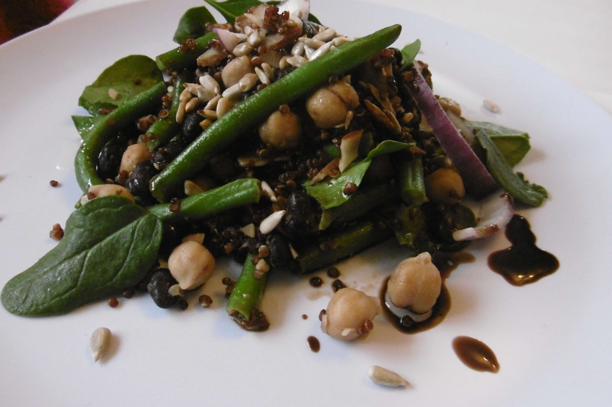

Power Protein Salad
Chili Roasted Almonds
- 1 Cup Sliced Raw Almonds
- Drizzle Extra Virgin Olive Oil
- 1/2 Tsp Smoked Paprika
- 1/2 Tsp Chilli Powder
- 1/2 Tsp Salt
The Rest of the Salad
- 1 cup green beans
- 1 Cup Quinoa cooked
- 1/2 Cup Black Beans cooked
- 1/2 Cup Chickpeas cooked
- 1/4 Red Onion sliced
To Serve
- Balsamic vinegar & Olive oil
- Any other nuts and seeds you like
Chili Roasted Almonds
- Start by toasting the almonds. While the pan is heating, combine almonds, olive oil, and spices in a bowl. Just use enough olive oil to lightly coat the almonds, not anymore.
- Mix well until almonds are evenly coated with the oil and spices. Put in the pan and toast.
The Rest of the Salad
- Assemble your salad - toss mixed greens, quinoa, beans, and onion with your favorite salad dressing until evenly combined. This salad is really versatile - feel free to sub quinoa with any other grain.